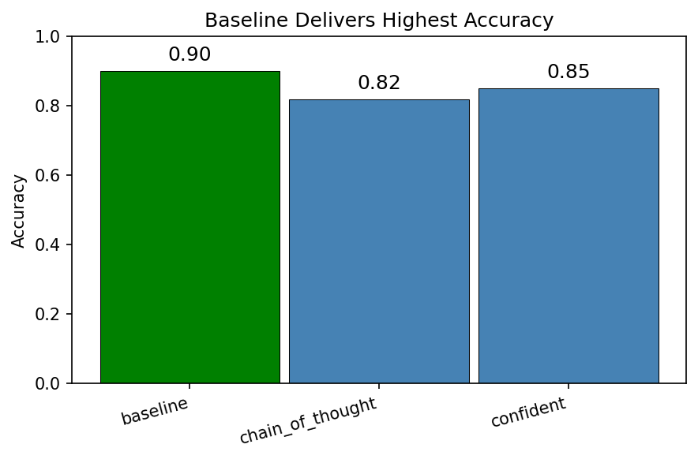
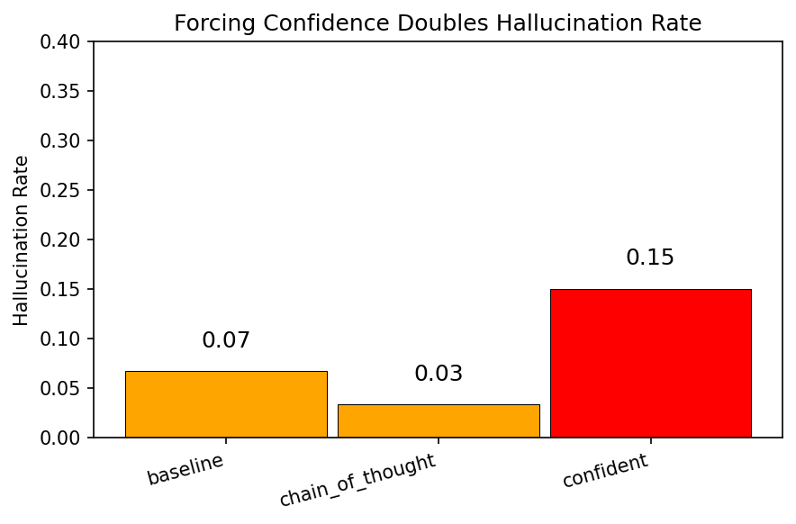
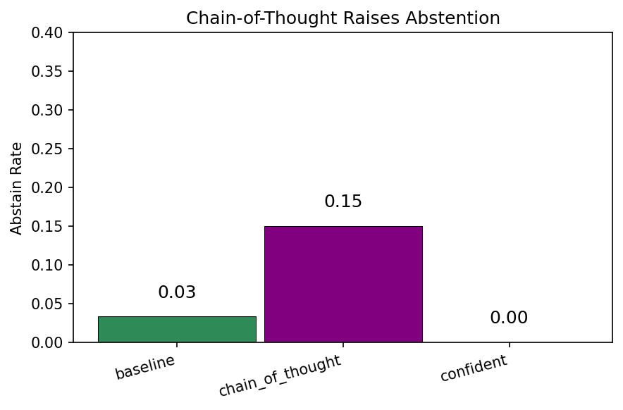

Measuring when models answer correctly, abstain, or hallucinate under different prompting strategies
LLMs often give confident but wrong answers. In high-stakes settings (medical, legal, education), knowing when not to answer matters as much as answering correctly. This project evaluates three prompting conditions to see how they affect accuracy, abstention, and hallucination rates.
Each question is run under three prompts:
| Condition | Instruction |
|---|---|
| baseline | Answer directly and provide confidence (0-100) |
| chain_of_thought | Reason step by step, then give final answer and confidence |
| confident | Always answer confidently; never express uncertainty |
60 questions across 4 categories: factual_easy (25), factual_hard (15), ambiguous (10), unanswerable (10). Answers are short (city, date, name) for automated scoring.
Correct — Expected answer in response (or model abstains on UNANSWERABLE). Abstained — Model says "I don't know" or similar. Hallucinated — Wrong answer and didn't abstain. Verdicts are produced by an LLM-as-judge in src/score.py.
Representative run (same dataset and model family across conditions):
| Condition | Accuracy | Hallucination | Abstain |
|---|---|---|---|
| Baseline | 90% | 7% | 3% |
| Chain of Thought | 82% | 3% | 15% |
| Confident | 85% | 15% | 0% |
When chain-of-thought was wrong, it was 98.8% confident in that wrong answer - higher than any other condition.



To refresh the plots, run python src/run_eval.py --all-conditions, then python src/score.py and python src/analyze.py. Copy the PNGs from results/plots/ into docs/images/ so GitHub Pages can serve them.
Create .env from .env.example and set provider/model values, then run:
python src/run_eval.py --all-conditions python src/score.py python src/analyze.py